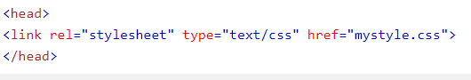
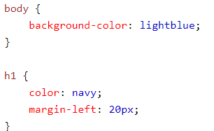

Quando um navegador lê uma folha de estilo, ele formata o documento HTML de acordo com as informações na folha de estilo.
Existem três maneiras de inserir uma folha de estilo:
Com uma folha de estilos externa, você pode alterar a aparência de um site inteiro alterando apenas um arquivo!
Cada página deve incluir uma referência ao arquivo da folha de estilo externa dentro do elemento link. O elemento link
entra na seção head:
Uma folha de estilos externa pode ser escrita em qualquer editor de texto.
O arquivo não deve conter nenhuma tag html.
arquivo da folha de estilo deve ser salvo com uma extensão .css.
Aqui está como o "mystyle.css" se parece:
Uma folha de estilos interna pode ser usada se uma única página tiver um estilo exclusivo.
Estilos internos são definidos dentro do elemento